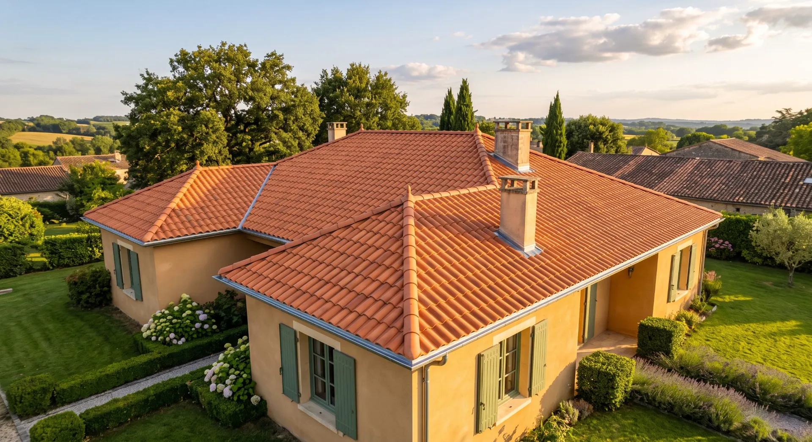
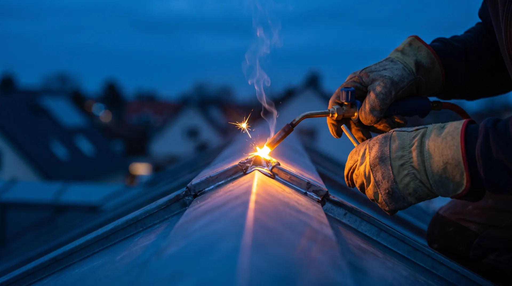
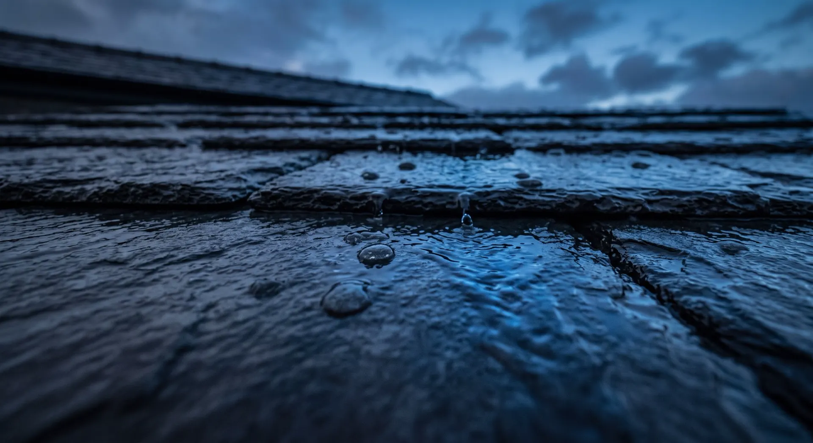

Ardoise
Posée au crochet ou au clou, comme sur les immeubles haussmanniens. Une ardoise naturelle dure un siècle si la charpente suit.
Couvreur zingueur · Paris et Île-de-France
Ardoise, zinc, tuile. Réfection complète, fuite, démoussage, gouttières. Visite du toit gratuite, photos à l'appui.
Un toit, on ne le regarde que le jour où il fuit. Nous, on y monte tous les matins, et on vous montre ce qu'on voit avant de vous parler prix.
Réalisation · Pavillon, 2024
Glissez le curseur pour comparer.

Métiers
Posée au crochet ou au clou, comme sur les immeubles haussmanniens. Une ardoise naturelle dure un siècle si la charpente suit.
Toits parisiens, terrasses, chéneaux, lucarnes. Joints debout et tasseaux, soudure à l'étain sur place.
Terre cuite plate, mécanique ou canal. Remplacement à l'identique, ou réfection complète avec écran sous toiture.

Zinguerie
Un joint en mastic tient trois hivers. Une soudure à l'étain tient autant que la feuille. On ne pose pas l'un à la place de l'autre.

Après chaque tempête
Le contrat d'entretien comprend une visite par an et un passage après chaque alerte météo orange. Ardoises glissées, zinc décollé, gouttières bouchées : repérés avant la première goutte.
Contrat d'entretien : 190 € par an
Visite du toit gratuite
Chaque visite se termine par un dossier photo de votre toit, envoyé par e-mail, que vous signiez le devis ou non.
01 42 55 63 08